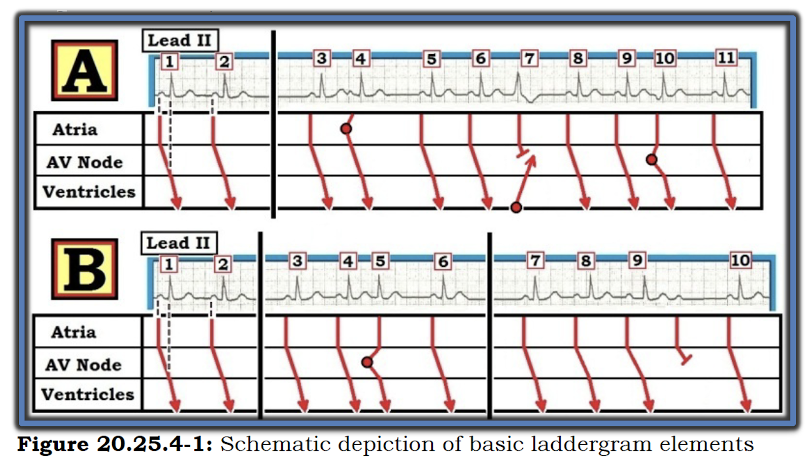
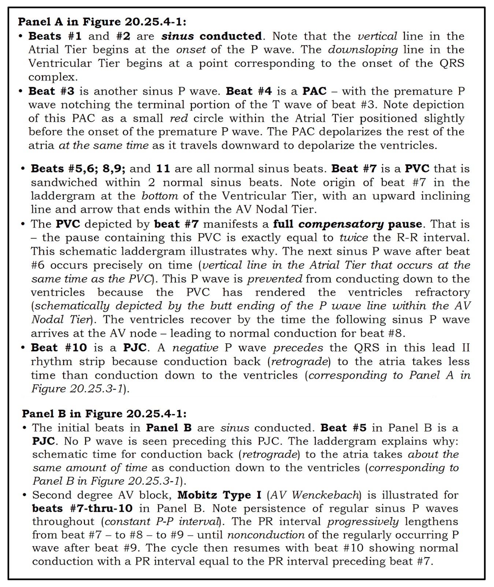
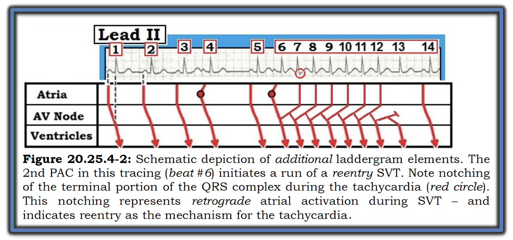
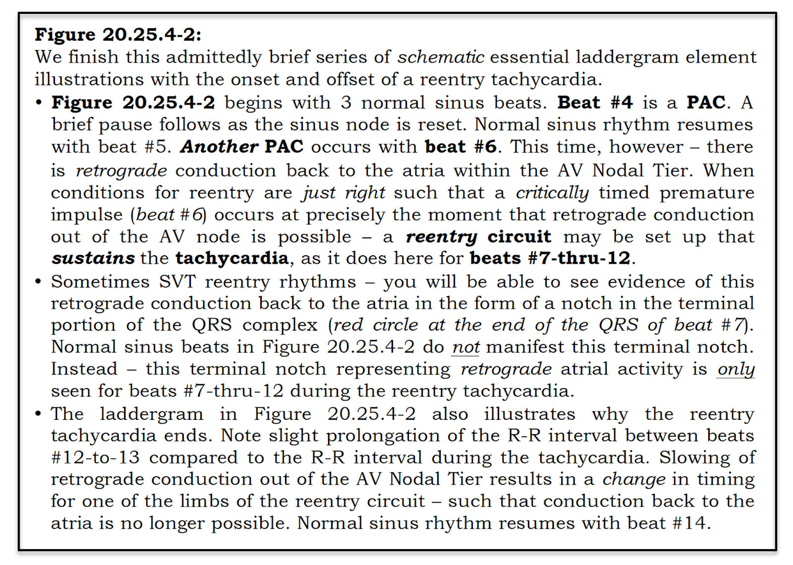

ECG Blog #188 — Cách đọc/vẽ giản đồ bậc thang (laddergram)
Học vẽ Giản đồ bậc thang (laddergram) là việc đầy thử thách. Tôi hoàn toàn thừa nhận rằng tôi đã mất khá nhiều thời gian mới cảm thấy thành thạo kỹ năng này. Dù vậy — học cách đọc giản đồ bậc thang thì DỄ — và quan trọng để nâng cao hiểu biết của bạn về các rối loạn nhịp phức tạp hơn.
- Tôi trình bày những điều cơ bản về giản đồ bậc thang là gì trong Video điện tâm đồ dài 5 phút bên dưới. Với phần giới thiệu này — bạn sẽ có thể hiểu được cơ chế được mô tả trong hầu hết các giản đồ bậc thang mà bạn sẽ gặp.
- Với những ai quan tâm đến việc vẽ giản đồ bậc thang — tôi hướng dẫn bạn một cách tiếp cận từng bước trong bài ECG Blog #69 (tiếp theo là các đường link ở CUỐI trang này dẫn tới hơn 140 ví dụ lâm sàng về giản đồ bậc thang mà tôi đã vẽ để minh họa các ca bệnh).
- LƯU Ý: Bạn không cần biết cách vẽ giản đồ bậc thang mới có thể đọc rối loạn nhịp một cách xuất sắc — NHƯNG — Việc thành thạo đọc giản đồ bậc thang sẽ vô cùng quý giá để đưa bạn lên trình độ tiếp theo!
- LINK dễ nhớ = https://tinyurl.com/KG-Laddergrams — dẫn bạn tới bài ECG Blog #188 này.

ECG Media Pearl #5: Video này (5:00 phút — sửa lại 11/10/2021) ôn lại những điều cơ bản về giản đồ bậc thang là gì. Giản đồ bậc thang mà tôi minh họa ngắn gọn (bắt đầu ở khoảng phút thứ ~4 của video) được trích từ bài ECG Blog #187 (bài này cung cấp thêm chi tiết về ca bệnh — kể cả, trong Phần bổ sung của Blog #187, một số khả năng khác về cơ chế của rối loạn nhịp) của tôi.
===================================
Cách Vẽ một Giản đồ bậc thang (Minh họa từng bước)
- Xem ECG Blog #69 — Để có hướng dẫn Từng bước bằng lời về việc vẽ một giản đồ bậc thang.
- Để luyện tập thêm, hãy xem bất kỳ đường LINK nào trong rất nhiều link bên dưới ở cuối bài blog hôm nay!
- BẤM VÀO ĐÂY — Để TẢI VỀ Mẫu Giản đồ bậc thang PowerPoint MIỄN PHÍ của tôi (Đây là LINK dễ nhớ tới Mẫu giản đồ bậc thang PowerPoint MIỄN PHÍ của tôi — tinyurl.com/KG-Laddergram-Stencil ).
===================================
Để Tóm tắt các thành phần thiết yếu của giản đồ bậc thang — tôi đã thêm 2 hình sau (lấy từ cuốn sách ACLS-2013-ePub của tôi). Chú thích giải thích các thành phần cơ bản của giản đồ bậc thang ở Ô A và Ô B nằm bên dưới mỗi Hình.




===================================




===================================
Để luyện tập Đọc Giản đồ bậc thang — Mời bạn XEM các bài ECG Blog sau đây do tôi viết, trong đó tôi có thêm hình minh họa bằng giản đồ bậc thang:
- ECG Blog #189 (kèm một video điện tâm đồ minh họa, dò theo từng bước dựng giản đồ bậc thang trong ca đầy thử thách này) — và — bài ECG Blog #187 của tôi (minh họa việc đôi khi có thể có nhiều hơn một cách giải thích bằng giản đồ bậc thang) —
- Một ca có nhịp theo nhóm (group beating) (minh họa Từng bước) — Xem ECG Blog #164 —
- Một bệnh nhân ngất và tụt huyết áp (minh họa Từng bước) — Xem ECG Blog #168 —
- STEMI thành dưới + Wenckebach AV — Xem ECG Blog #154 —
- Mobitz I + nhồi máu cơ tim cấp — Xem ECG Blog #55 —
- Mobitz I + các nhát thoát bộ nối — Xem ECG Blog #63 —
- Nhịp theo nhóm + PAC — Xem ECG Blog #147 —
- Thoát–bắt được (escape-capture) — Xem ECG Blog #163 —
- Nhát hỗn hợp — Xem ECG Blog #129 —
- PVC xen kẽ — Xem ECG Blog #68 —
- AIVR có dẫn truyền ngược dòng — Xem ECG Blog #107 —
- Rất nhiều phân ly nhĩ thất (không phải độ 3) — ECG Blog #202
- Blốc AV có hoàn toàn không? — Xem ECG Blog #191 (và Blog #405) —
- Phân ly nhĩ thất do "mặc định" ("Default") — Xem ECG Blog #192 —
- Phân ly nhĩ thất do "chiếm quyền" ("Usurpation") — Xem ECG Blog #247 —
- AIVR kèm nhát thoát bộ nối & nhát hỗn hợp — Xem ECG Blog #194 —
- Phân ly nhĩ thất đồng nhịp (isorhythmic) — Xem ECG Blog #195 —
- Mobitz I + blốc phân nhánh luân phiên — Xem ECG Blog #206 —
- Một ca blốc AV đầy thử thách ... — Xem ECG Blog #216 —
- Nhịp nhanh nhĩ (ATach) kèm Wenckebach — Xem ECG Blog #223 —
- Nhồi máu cơ tim thành dưới kèm Mobitz I — Xem ECG Blog #224 —
- Wenckebach hai tầng (dual-level) — Xem ECG Blog #226 —
- Nhồi máu cơ tim thành dưới gần đây kèm Mobitz I — Xem ECG Blog #232 —
- Blốc AV mức độ cao (không hoàn toàn) — ECG Blog #235 —
- Blốc AV 3:1, có lẽ là Mobitz II — Xem ECG Blog 237 —
- Nhát dội (echo) + Mobitz I kín đáo — Xem ECG Blog #239 —
- Giản đồ bậc thang của AVNRT "nhanh–chậm" — Xem ECG Blog #240
- Giản đồ bậc thang của nhịp đôi phân nhánh (fascicular) — Xem ECG Blog #241
- Cuồng nhĩ (AFlutter) kèm Wenckebach hai tầng (giản đồ bậc thang Từng bước về CÁCH vẽ!) — Xem ECG Blog #243 —
- Phân ly nhĩ thất do "chiếm quyền" ("Usurpation") — Xem ECG Blog #247 —
- Mobitz I kết thúc bằng một nhát dội — Xem ECG Blog #251 (kèm minh họa giản đồ bậc thang Từng bước).
- Nhịp đôi thoát–bắt được (Từng bước vẽ giản đồ bậc thang — CÁCH vẽ!) — Xem ECG Blog #256 —
- Nhịp nhanh nhĩ kèm có lẽ blốc AV hoàn toàn — Xem ECG Blog #257 —
- Nhịp đôi kèm Wenckebach hai tầng (Từng bước vẽ giản đồ bậc thang — CÁCH vẽ!) — Xem ECG Blog #259 —
- Nhịp nhanh nhĩ kèm Wenckebach (Từng bước vẽ giản đồ bậc thang — CÁCH vẽ!) — Xem ECG Blog #261 —
- Một ca Wenckebach AV bất thường (Từng bước vẽ giản đồ bậc thang — CÁCH vẽ!) — Xem ECG Blog #267 —
- Dẫn truyền "siêu bình thường" (supernormal) là gì? — Xem ECG Blog #268 —
- Vì sao có 3 hình dạng QRS? — Nhịp ba, dẫn truyền lệch hướng kiểu Ashman (Từng bước vẽ giản đồ bậc thang — CÁCH vẽ!) — Xem ECG Blog #279 —
- Nhịp đôi/sóng P ngẫu nhiên? (giải thích bằng VIDEO Từng bước cách tôi suy ra giản đồ bậc thang cho nhịp phức tạp này) — Xem ECG Blog #280 —
- AVNRT "nhanh–chậm" kèm điện thế luân phiên và dẫn truyền ngược dòng thay đổi — Xem ECG Blog #281 —
- Một AIVR không đều kèm nhồi máu cơ tim gần đây — Xem ECG Blog #285 —
- Một Mobitz I phức tạp "không tuân theo quy luật" (Từng bước vẽ giản đồ bậc thang — CÁCH vẽ!) — Xem ECG Blog #286 —
- Thêm một ca Mobitz I với Wenckebach phụ thuộc nhịp chậm (pha 4) — Xem ECG Blog #295 —
- Một ca Mobitz I phức tạp kèm OMI thành dưới (tôi không chắc chắn về cơ chế rối loạn nhịp — Xem ECG Blog #304 —
- Không triệu chứng nhưng tần số chậm (Mobitz I) — Xem ECG Blog #307 —
- Nhồi máu cơ tim sau dưới gần đây kèm Mobitz I phức tạp — Xem ECG Blog #311 —
- Blốc SA — Xem ECG Blog #312 —
- Nhịp đôi thoát–bắt được — Xem ECG Blog #315 —
- Nhịp thoát phân nhánh có dẫn truyền ngược dòng — Xem ECG Blog 327 —
- Phân ly nhĩ thất đồng nhịp — Xem ECG Blog #328 —
- Mobitz I không điển hình (Từng bước vẽ giản đồ bậc thang — CÁCH vẽ!) — Xem ECG Blog #331 —
- Blốc AV mức độ cao (phức tạp) — Xem ECG Blog #332 —
- Độ 2 nhưng không thể phân loại = phức tạp (Từng bước vẽ giản đồ bậc thang) — Xem ECG Blog #336 —
- Phân ly nhĩ thất do "chiếm quyền" (Từng bước vẽ giản đồ bậc thang) — Xem ECG Blog #338 —
- Mobitz I hay Mobitz II (2:1) — Xem ECG Blog #344 (và Blog #404) —
- Blốc AV hai tầng, Mobitz I — Xem ECG Blog #347 —
- Phân ly nhĩ thất đồng nhịp ở người 20 tuổi — Xem ECG Blog #357 —
- Blốc AV bẩm sinh ở người 20 tuổi (2:1, Mobitz I?) — Xem ECG Blog #358 —
- PVC — PVC xen kẽ — Dẫn truyền ẩn — Xem ECG Blog #359 —
- Phân ly nhĩ thất do "chiếm quyền" ở trẻ 14 tuổi — Xem ECG Blog #362 —
- Nhịp nhanh nhĩ kèm dẫn truyền Wenckebach 3:2 — Xem ECG Blog #370 —
- Các loạt nhát thất (ventricular salvos) (dẫn truyền ẩn) — giản đồ bậc thang cho thấy cơ chế (và chứng minh đây không phải là dẫn truyền lệch hướng) — Xem ECG Blog #372 —
- AIVR (giản đồ bậc thang chứng minh phân ly nhĩ thất) — Xem ECG Blog #373 —
- Viêm cơ tim + Wenckebach phức tạp (Từng bước vẽ giản đồ bậc thang) — Xem ECG Blog #376 —
- PVC xen kẽ — Xem ECG Blog #378 —
- SVT vào lại khởi phát từ một PVC — Xem ECG Blog #379 —
- Wenckebach AV không điển hình (KHÔNG có khoảng ngưng! ) — Xem ECG Blog #389 —
- Blốc AV hoàn toàn — Xem ECG Blog #390 —
- VT phân nhánh kèm nhiều nhát hỗn hợp — Xem ECG Blog #393 —
- Nhịp xoang phức tạp với PVC thường xuyên kèm dẫn truyền ẩn (Từng bước vẽ giản đồ bậc thang) — Xem ECG Blog #395 —
- Nhịp xoang với một chu kỳ Wenckebach AV dài — Xem ECG Blog #397 —
- Cường giáp với nhịp nhanh nhĩ không đều rất rõ, kèm dẫn truyền Wenckebach bất thường — Xem ECG Blog #398 —
- Giản đồ bậc thang nào đúng? — Blốc AV mức độ cao — Xem ECG Blog #399 —
- Blốc loại gì? — Mobitz I và BBB luân phiên — Xem ECG Blog #401 —
- Có phải Wenckebach? Một thử thách với phân ly nhĩ thất (giản đồ bậc thang Từng bước về CÁCH vẽ!) — Xem ECG Blog #411 —
- Blốc AV hoàn toàn — Xem ECG Blog #413 —
- Phân ly nhĩ thất do mặc định kèm loạn nhịp xoang rõ rệt — Xem ECG Blog #414 —
- OMI sau dưới cấp kèm Wenckebach hai tầng — Xem ECG Blog #416 —
- VT không đều rõ rệt (kèm nhát hỗn hợp — và dẫn truyền ngược dòng) — Xem ECG Blog #417 —
- Nhịp nhanh nhĩ kèm dẫn truyền Wenckebach (giản đồ bậc thang Từng bước về CÁCH vẽ!) — Xem ECG Blog #420 —
- Mobitz I kín đáo (kèm các nhát thoát bộ nối) ở một bệnh nhân OMI thành sau — Xem ECG Blog #421 —
- Người 92 tuổi không triệu chứng với NSVT phân nhánh và "phổ MAT" — Xem ECG Blog #428 —
- Một chu kỳ Wenckebach Mobitz I dài — Xem ECG Blog #437 —
- Wenckebach hai tầng — Xem ECG Blog #439 (giản đồ bậc thang Từng bước về CÁCH vẽ!) —
- Một ca Wenckebach đầy thử thách — Xem ECG Blog #449 (giản đồ bậc thang Từng bước về CÁCH vẽ! ) —
- Cường phế vị quá mức (vagal hypertonia) — Xem ECG Blog #450 —
- Chu kỳ Wenckebach dài — Xem ECG Blog #454 —
- Mobitz I kín đáo — Xem ECG Blog #457 —
- Không phải độ 3 (mà là độ 2) — Xem ECG Blog #458 —
- Cuồng nhĩ chậm & độ 3 — Xem ECG Blog #462 —
- Cuồng nhĩ kèm Wenckebach hai tầng (giản đồ bậc thang Từng bước về CÁCH vẽ!) — Xem ECG Blog #463 —
- WCT đều do VT phân nhánh (giản đồ bậc thang cho thấy VT kèm nhát hỗn hợp) — Xem ECG Blog #464 —
- Có lẽ là Mobitz II — rồi độ 3 — Xem ECG Blog #465 —
- Nhồi máu cơ tim cấp và độ 3 (không phải AIVR) — Xem ECG Blog #470 —
- SEMI thành dưới cấp + Mobitz I 2:1 và 3:2 — Xem ECG Blog #472 —
- Amyloid, nhịp nhanh nhĩ, dẫn truyền Wenckebach — Xem ECG Blog #480 —
- Mobitz I phức tạp (kèm tương hỗ PR/RP) — Xem ECG Blog #484 —
- Wenckebach SA — Xem ECG Blog #488 —
- PVC kèm nhát hỗn hợp — Xem ECG Blog #496 —
- Nhịp chậm xoang kèm thoát–bắt được — Xem ECG Blog #500 —
- "Nguyên nhân của một khoảng ngưng?" = PAC bị blốc — Xem ECG Blog #503 —
- Trẻ 10 tuổi, hồi hộp đánh trống ngực (giản đồ bậc thang dạng Video) — Xem ECG Blog #504 —
- VT kèm một phân ly nhĩ thất "khó nhận ra" — Xem ECG Blog #520 —
- VT kèm blốc đường ra kiểu Wenckebach — Xem ECG Blog #528 —
- Độ 2 kèm Mobitz I hai tầng mức độ cao (giản đồ bậc thang Từng bước về CÁCH vẽ!) — Xem ECG Blog #534 —
- VT bền bỉ kèm Wenckebach ngược dòng (chứng minh nhịp WCT đều này là VT! ) — Xem ECG Blog #538 —
- Dẫn truyền ngược dòng từng lúc chứng minh là VT! — Xem ECG Blog #539.
- Nhịp đôi kèm blốc SA — Xem ECG Blog #542 —
( 106 ca giản đồ bậc thang tính đến #542 ) —
Để luyện tập Thêm việc Đọc Giản đồ bậc thang — Mời bạn XEM các bài đăng sau đây trên Dr. Smith's ECG Blog (Vui lòng cuộn xuống CUỐI trang để xem Bình luận của tôi kèm hình minh họa bằng giản đồ bậc thang. Nhiều bài trong số này sẽ cho thấy từng bước cách tôi dựng giản đồ bậc thang).
- Nhồi máu cơ tim cấp thành dưới — từ bài ngày 19/1/2020.
- PVC xen kẽ — từ bài ngày 9/4/2020.
- Wenckebach AV (PR rất dài) — Loạn nhịp xoang — Sử dụng Atropine (kèm hình minh họa từng bước để vẽ giản đồ bậc thang này) — từ bài ngày 16/5/2020.
- Không có thông tin lâm sàng — từ bài ngày 28/5/2019.
- Quá liều thuốc và một rối loạn nhịp hấp dẫn — từ bài ngày 13/6/2020.
- Hồi hộp đánh trống ngực và một nhịp phức tạp (Pha 4 = Dẫn truyền lệch hướng do nhịp chậm — Giản đồ bậc thang từng bước) — từ bài ngày 17/8/2020.
- Có Wenckebach không? (Đường dẫn truyền kép trong nút AV kèm Mobitz I — khoảng PR nhảy vọt!) — từ bài ngày 9/9/2020.
- Blốc AV mức độ cao với nhịp thoát từ nhánh bó — từ bài ngày 24/9/2020.
- Nhịp theo nhóm không phải Wenckebach — từ bài ngày 26/9/2020.
- Vẽ nhịp thoát bộ nối — từ bài ngày 9/10/2020.
- Một cú ngã và một nhịp cần nhận ra (Digoxin) — từ bài ngày 24/11/2020.
- Một bản ghi phức tạp với Mobitz I có thể có + một nhịp phân nhánh gia tốc + các mức độ hỗn hợp khác nhau với nhịp nền — từ bài ngày 17/6/2021.
- Wenckebach hai mức sau ngừng tim — từ bài ngày 25/10/2021.
- Mobitz I với PR dài (Ngưng thất) — từ bài ngày 14/3/2022.
- Nhồi máu cơ tim cấp thành dưới kèm blốc SA — từ bài ngày 25/5/2022.
- Một bản ghi máy tạo nhịp với các nhát bị blốc — từ bài ngày 3/8/2022.
- Đánh giá một chu kỳ Wenckebach dài (BÀI Của tôi! ) — từ bài ngày 26/1/2023 (cũng đề cập ý nghĩa lâm sàng của blốc AV độ 1 rất dài ≥0.30 giây).
- Nhịp này có làm bạn bối rối không? (BÀI Của tôi! — về Wenckebach AV với khoảng PR rất dài) — từ bài ngày 30/3/2023.
- Wenckebach AV bị chẩn đoán nhầm thành AFib (không phải blốc "ba phân nhánh"! ) — từ bài ngày 6/4/2023.
- Wenckebach AV hai mức — từ bài ngày 26/5/2023.
- Phân ly nhĩ thất đồng tần số (isorhythmic) (CA của tôi) — từ bài ngày 26/6/2023.
- Nhịp thoát bộ nối + Wenckebach AV — từ bài ngày 30/7/2023.
- Blốc SA so với PAC bị blốc (Nhịp theo nhóm! ) — từ bài ngày 30/8/2023.
- AIVR chiếm chỗ Mobitz I — từ bài ngày 3/10/2023.
- Mobitz I so với Mobitz II — từ bài ngày 23/1/2024.
- Precordial Swirl kèm giản đồ bậc thang của nhịp thoát phân nhánh từng lúc! — từ bài ngày 22/3/2024 của W.Frick.
- Cuồng nhĩ (AFlutter) với dẫn truyền Wenckebach hai mức — từ bài ngày 3/6/2024
- AIVR (với việc AIVR "giành quyền" khỏi nhịp xoang) — từ bài ngày 9/8/2024 của Dr. Frick.
- Blốc SA (Sóng P đã đi đâu? — giản đồ bậc thang phức tạp) — từ bài ngày 14/8/2024 của Dr. Frick.
- NSVT — Các nhát dội (Ngược dòng) — từ bài ngày 3/11/2024 —
- Xử lý sự cố tạo nhịp (ATach — PVARP — Nhịp nhanh do máy tạo nhịp) — từ bài ngày 20/12/2024.
- OMI kèm AIVR (Các nhát hỗn hợp) — từ bài ngày 5/1/2025.
- Cuồng nhĩ (AFlutter) với Wenckebach hai mức (tỷ lệ dẫn truyền thay đổi) — từ bài ngày 26/1/2025.
- Nhịp chậm xoang kèm nhịp thoát bộ nối — từ bài ngày 10/5/2025.
- Cuồng nhĩ (AFlutter) với dẫn truyền Wenckebach hai mức — từ bài ngày 24/5/2025.
- SVT vào lại (có đường phụ tham gia; ATach; các nhát bộ nối) — từ bài ngày 26/12/2025.
- SVT vào lại (với các khoảng R-R luân phiên) — từ bài ngày 6/1/2026.
- Nhịp bộ nối kèm phân ly nhĩ thất (Ngất ở một người khỏe mạnh) — từ bài ngày 9/6/2026.
- Giản đồ bậc thang lý thuyết — cho thấy vì sao dẫn truyền ngược dòng từng lúc mà không làm xáo trộn tính đều của một nhịp WCT chứng minh rằng WCT đó là VT (chứ không phải một nhịp SVT vào lại) — từ bài ngày 6/7/2026.
(39 ca có giản đồ bậc thang tính đến ngày 6/7/2026) —
================================
LƯU Ý (21/6/2026): Tôi sẽ tiếp tục bổ sung vào trang này đường link tới các giản đồ bậc thang khác mà tôi dùng để minh họa ca bệnh.
- HÃY GỬI CHO TÔI những ca rối loạn nhịp thú vị mà bạn muốn thấy được đăng trên ECG Blog của tôi. Tôi luôn vui lòng ghi nhận đóng góp của bạn trong bài đăng! CẢM ƠN sự quan tâm của bạn!

PHẦN BỔ SUNG (16/11/2021):
Yalena Bradford đã giới thiệu với tôi một ca rối loạn nhịp thú vị. Dù hoàn toàn thừa nhận rằng tôi không thể đưa ra một giản đồ bậc thang "đáp án dứt khoát" — tôi nghĩ quá trình mà tôi đã suy luận trong Video 7 phút này dù sao vẫn có thể hữu ích. Rất hoan nghênh BÌNH LUẬN về ca này! — :) Ken Grauer, MD